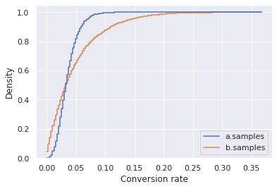

import numpy as np
from myst_nb import glue
from scipy.stats import norm
from scipy.stats import beta
import matplotlib.pyplot as plt
import pandas as pd
# Import seaborn
import seaborn as sns
# Apply the default theme
sns.set_theme()
/mnt/c/projects/Code/bayes-missing-manual/bayes-venv/lib/python3.8/site-packages/pandas/compat/__init__.py:97: UserWarning: Could not import the lzma module. Your installed Python is incomplete. Attempting to use lzma compression will result in a RuntimeError.
warnings.warn(msg)
m = 1.4 # mean
s = 0.3 # standard deviation
x = np.linspace(norm.ppf(0.025, loc=m, scale=s), norm.ppf(0.975, loc=m, scale=s), 100)
y = norm.pdf(x, loc=m, scale=s)
z = y/sum(y)
fig, ax = plt.subplots(1, 1)
ax.plot(x, z, lw=5, alpha=0.6, label='norm pdf')
# ax.plot(x, z, lw=0.1, alpha=0.6, label='norm pdf', marker = '.',markersize=10)
ax.set_xlabel('Weight [lb]');
# ax.set_ylabel('Probability Mass');
ax.get_yaxis().set_visible(False);
glue('bread-weight-pdf',fig, display=False)
glue("mean-bread", m, display=False)
glue("std-bread", s, display=False)
n1 = 7
n2 = 15
x = np.linspace(norm.ppf(0.025, loc=m, scale=s), norm.ppf(0.975, loc=m, scale=s), n1)
y = norm.pdf(x, loc=m, scale=s)
z = y/sum(y)
fig, (ax1, ax2) = plt.subplots(1, 2, sharey=True)
# ax1.plot(x, z, lw=5, alpha=0.6, label='norm pdf')
ax1.plot(x, z, lw=0.1, alpha=0.6, label=f'n={n1}', marker = '.',markersize=10)
ax1.set_xlabel('Weight [lb]');
ax1.set_ylabel('Probability mass');
ax1.legend(loc='lower center')
x = np.linspace(norm.ppf(0.025, loc=m, scale=s), norm.ppf(0.975, loc=m, scale=s), n2)
y = norm.pdf(x, loc=m, scale=s)
z = y/sum(y)
ax2.plot(x, z, lw=0.1, alpha=0.6, label=f'n={n2}', marker = '.',markersize=10)
ax2.set_xlabel('Weight [lb]');
# ax.set_ylabel('Probability Mass');
# ax.get_yaxis().set_visible(False);
ax2.legend(loc='lower center')
glue('pmf-sm-lg',fig, display=False)
glue('n1',n1, display=False)
glue('n2',n2, display=False)
a = 2
b = 9
x = np.linspace(0, 1, 100)
fig, ax = plt.subplots(1, 1)
ax.plot(x, beta.pdf(x, a, b), lw=5, alpha=0.6, label='beta pdf')
ax.set_xlabel("Probability")
ax.set_ylabel('Probability mass');
# ax.get_yaxis().set_visible(False);
glue('beta-dist',fig, display=False)
glue("beta-ex-a", a, display=False)
glue("beta-ex-b", b, display=False)

a1 = 2
b1 = 9
a2 = 1
b2 = 1
a3 = 9
b3 = 2
a4 = 1
b4 = 2
a5 = 3
b5 = 1
a6 = 3
b6 = 3
x = np.linspace(0, 1, 100)
fig, ax = plt.subplots(1, 1,figsize=(7,5))
ax.plot(x, beta.pdf(x, a1, b1), lw=5, alpha=0.6, label=r'$\alpha=2$, $\beta=9$')
ax.plot(x, beta.pdf(x, a2, b2), lw=5, alpha=0.6, label=r'$\alpha=1$, $\beta=1$')
ax.plot(x, beta.pdf(x, a3, b3), lw=5, alpha=0.6, label=r'$\alpha=9$, $\beta=2$')
ax.plot(x, beta.pdf(x, a4, b4), lw=5, alpha=0.6, label=r'$\alpha=1$, $\beta=2$')
ax.plot(x, beta.pdf(x, a5, b5), lw=5, alpha=0.6, label=r'$\alpha=3$, $\beta=1$')
ax.plot(x, beta.pdf(x, a6, b6), lw=5, alpha=0.6, label=r'$\alpha=3$, $\beta=3$')
ax.set_xlabel("Probability")
ax.set_ylabel('Probability mass');
# ax.get_yaxis().set_visible(False);
ax.legend()
glue('beta-dist-shapes',fig, display=False)
a_prior = 1
b_prior = 9
glue("a_prior", a_prior, display=False)
glue("b_prior", b_prior, display=False)
a_like = 3
b_like = 97
glue("a_like", a_like, display=False)
glue("b_like", b_like, display=False)
a_post = a_prior + a_like
b_post = b_prior + b_like
glue("a_post", a_post, display=False)
glue("b_post", b_post, display=False)
x = np.linspace(0, 1, 1000)
# prior
fig, ax = plt.subplots(1,1)
ax.plot(x, beta.pdf(x, a_prior, b_prior), lw=5, alpha=0.6, label='prior')
# likelihood
fig, ax = plt.subplots(1,1)
ax.plot(x, beta.pdf(x, a_like, b_like), color = sns.color_palette()[1], lw=5, alpha=0.6, label='likelihood')
# posterior
fig, ax = plt.subplots(1,1)
ax.plot(x, beta.pdf(x, a_post, b_post), color = sns.color_palette()[2], lw=5, alpha=0.6, label='posterior')
# all togehter
fig, ax = plt.subplots(1,1)
ax.plot(x, beta.pdf(x, a_prior, b_prior), lw=5, alpha=0.6, label='prior')
ax.plot(x, beta.pdf(x, a_like, b_like), color = sns.color_palette()[1], lw=5, alpha=0.6, label='likelihood')
ax.plot(x, beta.pdf(x, a_post, b_post), color = sns.color_palette()[2], lw=5, alpha=0.6, label='posterior')
# all togehter, zoom on details
fig, ax = plt.subplots(1,1)
ax.plot(x, beta.pdf(x, a_prior, b_prior), lw=5, alpha=0.6, label='prior')
ax.plot(x, beta.pdf(x, a_like, b_like), color = sns.color_palette()[1], lw=5, alpha=0.6, label='likelihood')
ax.plot(x, beta.pdf(x, a_post, b_post), color = sns.color_palette()[2], lw=5, alpha=0.6, label='posterior')
ax.set_xlim([0,0.1])
ax.legend()
<matplotlib.legend.Legend at 0x7f7a13b93ee0>

def beta_mean(a,b):
return a/(a+b)
fig, (ax1, ax2, ax3) = plt.subplots(1, 3, figsize=(12,3), sharey=True)
ax1.plot(x, beta.pdf(x, a_prior, b_prior), lw=5, alpha=0.6, label='prior')
ax1.set_title("Prior");
ax1.set_ylabel('Probability mass');
ax1.set_xlabel("Conversion rate")
ax2.plot(x, beta.pdf(x, a_like, b_like), color = sns.color_palette()[1], lw=5, alpha=0.6, label='likelihood')
ax2.set_title("Likelihood");
ax2.set_xlabel("Conversion rate")
ax3.plot(x, beta.pdf(x, a_post, b_post), color = sns.color_palette()[2], lw=5, alpha=0.6, label='posterior')
ax3.set_title("Posterior");
ax3.set_xlabel("Conversion rate")
glue('book-prior-like-post',fig, display=False)
mu_prior = beta_mean(a_prior,b_prior)
print(f'Prior mean: {mu_prior}')
mu_like = beta_mean(a_like,b_like)
print(f'Likelihood mean: {mu_like}')
mu_post = beta_mean(a_post,b_post)
print(f'Posterior mean: {mu_post}')
glue("mu_prior", mu_prior, display=False)
glue("mu_like", mu_like, display=False)
glue("mu_post", mu_post, display=False)
Prior mean: 0.1
Likelihood mean: 0.03
Posterior mean: 0.03636363636363636
# all togehter, zoom on details
fig, ax = plt.subplots(1,1)
ax.plot(x, beta.pdf(x, a_prior, b_prior), lw=5, alpha=0.6, label='prior')
ax.plot(x, beta.pdf(x, a_like, b_like), color = sns.color_palette()[1], lw=5, alpha=0.6, label='likelihood')
ax.plot(x, beta.pdf(x, a_post, b_post), color = sns.color_palette()[2], lw=5, alpha=0.6, label='posterior')
ax.set_xlim([0,0.1])
ax.set_xlabel("Conversion rate")
ax.set_ylabel('Probability mass');
ax.legend()
glue('book-together',fig, display=False)
a_sexy = 1
b_sexy = 20
glue("a_sexy", a_sexy, display=False)
glue("b_sexy", b_sexy, display=False)
fig, ax = plt.subplots(1,1)
ax.plot(x, beta.pdf(x, a_post, b_post), lw=5, alpha=0.6, label='Variant A')
ax.plot(x, beta.pdf(x, a_sexy, b_sexy), lw=5, alpha=0.6, label='Variant B')
ax.set_xlim([0,0.1])
ax.set_xlabel("Conversion rate")
ax.set_ylabel("Probability mass")
ax.legend()
glue('A-B-distributions',fig, display=False)
mu_post = beta_mean(a_post,b_post)
print(f'Posterior mean: {mu_post}')
mu_sexy = beta_mean(a_sexy,b_sexy)
print(f'Sexy mean: {mu_sexy}')
glue("mu_sexy", mu_sexy, display=False)
N_original = a_post + b_post
glue("N_original", N_original, display=False)
N_sexy = a_sexy + b_sexy
glue("N_sexy", N_sexy, display=False)
N_diff = N_original - N_sexy
glue("N_diff", N_diff, display=False)
Posterior mean: 0.03636363636363636
Sexy mean: 0.047619047619047616
N = 10000
glue("N_samples", N, display=False)
varA = beta.rvs(a_post, b_post, size=N)
varB = beta.rvs(a_sexy, b_sexy, size=N)
df = pd.DataFrame(data=varA)
df['varB'] = varB
df.columns = ['a.samples', 'b.samples']
fig, ax = plt.subplots(1,1)
sns.histplot(df, ax=ax, element="step").set(xlabel='Conversion rate', xlim=(0,0.1));
glue('A-B-Monte-Carlo',fig, display=False)
ratio = varB/varA
fig, ax = plt.subplots(1,1)
sns.histplot(ratio, ax=ax, element="step", color = sns.color_palette()[2]).set(xlim=(0,15), xlabel='Ratio (b.sample / a.sample)');
glue('A-B-Monte-Carlo-ratio',fig, display=False)

b_superior = sum(varB > varA)/N*100
glue('b_superior',b_superior, display=False)
glue('a_superior',100-b_superior, display=False)
b_superior
49.59
fig, ax = plt.subplots(1,1)
sns.histplot(df, ax=ax, element="step", fill=False, cumulative=True, stat="density",common_norm=False).set(xlabel='Conversion rate');
glue('A-B-CDF-varA-varB',fig, display=False)

fig, ax = plt.subplots(1,1)
sns.histplot(ratio, ax=ax, element="step", fill=False, cumulative=True, stat="density", color = sns.color_palette()[2]).set(xlabel='Ratio', xlim=(0,15));
glue('A-B-CDF-ratio',fig, display=False)
fig, (ax1, ax2) = plt.subplots(1,2, figsize=(10,5))
sns.histplot(ratio, element="step", ax = ax1, fill=False, cumulative=True, stat="density", color = sns.color_palette()[2]).set(xlabel='Ratio', xlim=(0,15));
sns.histplot(ratio, element="step", ax = ax2, fill=False, cumulative=True, stat="density", color = sns.color_palette()[2]).set(xlim=(0,5), xlabel='Ratio');
def gridMethod(theta, prior, H, T, fig_name):
likelihood = theta**H * (1-theta)**T
prior_like = prior * likelihood
posterior = prior_like/np.sum(prior_like)
print(':::{list-table} Caption goes here ')
print(':header-rows: 1')
print(':widths: auto')
print(':name: <table name>')
print('')
print('* - $\\theta$')
for x in theta:
print(f' - {x}')
print(f' - Sum')
print('* - Prior')
for x in prior:
print(f' - {x:2.2f}')
print(f' - {sum(prior):2.2f}')
print('* - Likelihood')
for x in likelihood:
print(f' - {x:2.2e}')
print(f' - {sum(likelihood):2.2e}')
print('* - Prior x Likelihood')
for x in prior_like:
print(f' - {x:2.1e}')
print(f' - {sum(prior_like):2.1e}')
print('* - Posterior')
for x in posterior:
print(f' - {x:2.2f}')
print(f' - {sum(posterior):2.2f}')
print(':::')
fig, (ax1,ax2,ax3) = plt.subplots(3,1, sharex=True, figsize=(5,10))
ax1.plot(theta,prior,'-o')
ax1.set_title('Prior')
ax1.set_ylabel("Probability mass")
ax2.plot(theta,likelihood,'-o')
ax2.set_title('Likelihood')
ax2.set_ylabel("Probability mass")
ax3.plot(theta,posterior,'-o')
ax3.set_title('Posterior')
ax3.set_ylabel("Probability mass")
ax3.set_xlim(0,1)
ax3.set_xlabel(r'$\theta$')
glue(fig_name, fig, display=False)
return posterior
theta = np.array([0.1,0.2,0.3,0.4,0.5,0.6,0.7,0.8,0.9])
m = 0.5 # mean
s = 0.15 # standard deviation
# x = np.linspace(norm.ppf(0.001, loc=m, scale=s), norm.ppf(0.999, loc=m, scale=s), 100)
# y = norm.pdf(x, loc=m, scale=s)
# z = y/sum(y)
# plt.plot(x,z)
y = norm.pdf(theta, loc=m, scale=s)
prior = y/sum(y)
plt.plot(theta,prior)
[<matplotlib.lines.Line2D at 0x7f7a139d3af0>]
H = 8
T = 2
likelihood = theta**H * (1-theta)**T
plt.plot(theta,likelihood)
[<matplotlib.lines.Line2D at 0x7f7a13981fd0>]
prior_like = prior * likelihood
posterior = prior_like/np.sum(prior_like)
plt.plot(theta,posterior,'-o')
[<matplotlib.lines.Line2D at 0x7f7a138e9340>]
fig, (ax1,ax2,ax3) = plt.subplots(3,1, sharex=True, figsize=(5,10))
ax1.plot(theta,prior,'-o')
ax1.set_title('Prior')
ax2.plot(theta,likelihood,'-o')
ax2.set_title('Likelihood')
ax3.plot(theta,posterior,'-o')
ax3.set_title('Posterior')
ax3.set_xlim(0,1)
ax3.set_xlabel(r'$\theta$')
Text(0.5, 0, '$\\theta$')
HHHHT = 0.25**4 * 0.75**1
glue('HHHHT',HHHHT, display=False)
HHHHT
0.0029296875
theta = np.array([0.25, 0.5, 0.75])
H = 4
T = 1
prior = np.array([0.1,0.6,0.3])
post1 = gridMethod(theta, prior, H, T, 'small-theta-first')
:::{list-table} Caption goes here
:header-rows: 1
:widths: auto
:name: <table name>
* - $\theta$
- 0.25
- 0.5
- 0.75
- Sum
* - Prior
- 0.10
- 0.60
- 0.30
- 1.00
* - Likelihood
- 2.93e-03
- 3.12e-02
- 7.91e-02
- 1.13e-01
* - Prior x Likelihood
- 2.9e-04
- 1.9e-02
- 2.4e-02
- 4.3e-02
* - Posterior
- 0.01
- 0.44
- 0.55
- 1.00
:::

H = 4
T = 1
prior = post1
gridMethod(theta, prior, H, T, 'small-theta-second');
:::{list-table} Caption goes here
:header-rows: 1
:widths: auto
:name: <table name>
* - $\theta$
- 0.25
- 0.5
- 0.75
- Sum
* - Prior
- 0.01
- 0.44
- 0.55
- 1.00
* - Likelihood
- 2.93e-03
- 3.12e-02
- 7.91e-02
- 1.13e-01
* - Prior x Likelihood
- 2.0e-05
- 1.4e-02
- 4.4e-02
- 5.8e-02
* - Posterior
- 0.00
- 0.24
- 0.76
- 1.00
:::
theta = np.array([0.1,0.2,0.3,0.4,0.5,0.6,0.7,0.8,0.9])
H = 4
T = 1
m = 0.5 # mean
s = 0.15 # standard deviation
y = norm.pdf(theta, loc=m, scale=s)
prior = y/sum(y)
post2 = gridMethod(theta, prior, H, T, 'large-theta-first');
p_gt_50 = sum(post2[5:9])
glue('p_gt_50',p_gt_50, display=False)
print(f"Probability theta > 0.5: {p_gt_50}")
:::{list-table} Caption goes here
:header-rows: 1
:widths: auto
:name: <table name>
* - $\theta$
- 0.1
- 0.2
- 0.3
- 0.4
- 0.5
- 0.6
- 0.7
- 0.8
- 0.9
- Sum
* - Prior
- 0.01
- 0.04
- 0.11
- 0.21
- 0.27
- 0.21
- 0.11
- 0.04
- 0.01
- 1.00
* - Likelihood
- 9.00e-05
- 1.28e-03
- 5.67e-03
- 1.54e-02
- 3.12e-02
- 5.18e-02
- 7.20e-02
- 8.19e-02
- 6.56e-02
- 3.25e-01
* - Prior x Likelihood
- 6.9e-07
- 4.6e-05
- 6.2e-04
- 3.3e-03
- 8.3e-03
- 1.1e-02
- 7.9e-03
- 3.0e-03
- 5.0e-04
- 3.5e-02
* - Posterior
- 0.00
- 0.00
- 0.02
- 0.09
- 0.24
- 0.32
- 0.23
- 0.09
- 0.01
- 1.00
:::
Probability theta > 0.5: 0.6461021583638344

sum(post2[5:9])
0.6461021583638344
H = 4
T = 1
prior = post2
post3 = gridMethod(theta, prior, H, T,'large-theta-extra');
p_gt_50_extra = sum(post3[5:9])
glue('p_gt_50_extra',p_gt_50_extra, display=False)
print(f"Probability theta > 0.5: {p_gt_50_extra}")
:::{list-table} Caption goes here
:header-rows: 1
:widths: auto
:name: <table name>
* - $\theta$
- 0.1
- 0.2
- 0.3
- 0.4
- 0.5
- 0.6
- 0.7
- 0.8
- 0.9
- Sum
* - Prior
- 0.00
- 0.00
- 0.02
- 0.09
- 0.24
- 0.32
- 0.23
- 0.09
- 0.01
- 1.00
* - Likelihood
- 9.00e-05
- 1.28e-03
- 5.67e-03
- 1.54e-02
- 3.12e-02
- 5.18e-02
- 7.20e-02
- 8.19e-02
- 6.56e-02
- 3.25e-01
* - Prior x Likelihood
- 1.8e-09
- 1.7e-06
- 1.0e-04
- 1.5e-03
- 7.5e-03
- 1.7e-02
- 1.6e-02
- 7.0e-03
- 9.4e-04
- 5.0e-02
* - Posterior
- 0.00
- 0.00
- 0.00
- 0.03
- 0.15
- 0.33
- 0.33
- 0.14
- 0.02
- 1.00
:::
Probability theta > 0.5: 0.8184875735348761

H = 8
T = 2
y = np.array(9*[1/9])
prior = y/sum(y)
post4 = gridMethod(theta, prior, H, T, 'large-theta-uniform');
p_gt_50_uniform = sum(post4[5:9])
glue('p_gt_50_uniform',p_gt_50_extra, display=False)
print(f"Probability theta > 0.5: {p_gt_50_uniform}")
:::{list-table} Caption goes here
:header-rows: 1
:widths: auto
:name: <table name>
* - $\theta$
- 0.1
- 0.2
- 0.3
- 0.4
- 0.5
- 0.6
- 0.7
- 0.8
- 0.9
- Sum
* - Prior
- 0.11
- 0.11
- 0.11
- 0.11
- 0.11
- 0.11
- 0.11
- 0.11
- 0.11
- 1.00
* - Likelihood
- 8.10e-09
- 1.64e-06
- 3.21e-05
- 2.36e-04
- 9.77e-04
- 2.69e-03
- 5.19e-03
- 6.71e-03
- 4.30e-03
- 2.01e-02
* - Prior x Likelihood
- 9.0e-10
- 1.8e-07
- 3.6e-06
- 2.6e-05
- 1.1e-04
- 3.0e-04
- 5.8e-04
- 7.5e-04
- 4.8e-04
- 2.2e-03
* - Posterior
- 0.00
- 0.00
- 0.00
- 0.01
- 0.05
- 0.13
- 0.26
- 0.33
- 0.21
- 1.00
:::
Probability theta > 0.5: 0.938111272459749

H = 8
T = 2
m = 0.5 # mean
s = 0.05 # standard deviation
y = norm.pdf(theta, loc=m, scale=s)
prior = y/sum(y)
gridMethod(theta, prior, H, T, 'large-theta-skeptical');
:::{list-table} Caption goes here
:header-rows: 1
:widths: auto
:name: <table name>
* - $\theta$
- 0.1
- 0.2
- 0.3
- 0.4
- 0.5
- 0.6
- 0.7
- 0.8
- 0.9
- Sum
* - Prior
- 0.00
- 0.00
- 0.00
- 0.11
- 0.79
- 0.11
- 0.00
- 0.00
- 0.00
- 1.00
* - Likelihood
- 8.10e-09
- 1.64e-06
- 3.21e-05
- 2.36e-04
- 9.77e-04
- 2.69e-03
- 5.19e-03
- 6.71e-03
- 4.30e-03
- 2.01e-02
* - Prior x Likelihood
- 8.1e-23
- 2.0e-14
- 8.5e-09
- 2.5e-05
- 7.7e-04
- 2.9e-04
- 1.4e-06
- 8.0e-11
- 4.3e-17
- 1.1e-03
* - Posterior
- 0.00
- 0.00
- 0.00
- 0.02
- 0.71
- 0.26
- 0.00
- 0.00
- 0.00
- 1.00
:::
theta = np.linspace(0,1,100)
H = 8
T = 2
m = 0.5 # mean
s = 0.15 # standard deviation
y = norm.pdf(theta, loc=m, scale=s)
prior = y/sum(y)
gridMethod(theta, prior, H, T, 'very-large-theta-extra');
:::{list-table} Caption goes here
:header-rows: 1
:widths: auto
:name: <table name>
* - $\theta$
- 0.0
- 0.010101010101010102
- 0.020202020202020204
- 0.030303030303030304
- 0.04040404040404041
- 0.05050505050505051
- 0.06060606060606061
- 0.07070707070707072
- 0.08080808080808081
- 0.09090909090909091
- 0.10101010101010102
- 0.11111111111111112
- 0.12121212121212122
- 0.13131313131313133
- 0.14141414141414144
- 0.15151515151515152
- 0.16161616161616163
- 0.17171717171717174
- 0.18181818181818182
- 0.19191919191919193
- 0.20202020202020204
- 0.21212121212121213
- 0.22222222222222224
- 0.23232323232323235
- 0.24242424242424243
- 0.25252525252525254
- 0.26262626262626265
- 0.27272727272727276
- 0.2828282828282829
- 0.29292929292929293
- 0.30303030303030304
- 0.31313131313131315
- 0.32323232323232326
- 0.33333333333333337
- 0.3434343434343435
- 0.3535353535353536
- 0.36363636363636365
- 0.37373737373737376
- 0.38383838383838387
- 0.393939393939394
- 0.4040404040404041
- 0.4141414141414142
- 0.42424242424242425
- 0.43434343434343436
- 0.4444444444444445
- 0.4545454545454546
- 0.4646464646464647
- 0.4747474747474748
- 0.48484848484848486
- 0.494949494949495
- 0.5050505050505051
- 0.5151515151515152
- 0.5252525252525253
- 0.5353535353535354
- 0.5454545454545455
- 0.5555555555555556
- 0.5656565656565657
- 0.5757575757575758
- 0.5858585858585859
- 0.595959595959596
- 0.6060606060606061
- 0.6161616161616162
- 0.6262626262626263
- 0.6363636363636365
- 0.6464646464646465
- 0.6565656565656566
- 0.6666666666666667
- 0.6767676767676768
- 0.686868686868687
- 0.696969696969697
- 0.7070707070707072
- 0.7171717171717172
- 0.7272727272727273
- 0.7373737373737375
- 0.7474747474747475
- 0.7575757575757577
- 0.7676767676767677
- 0.7777777777777778
- 0.787878787878788
- 0.797979797979798
- 0.8080808080808082
- 0.8181818181818182
- 0.8282828282828284
- 0.8383838383838385
- 0.8484848484848485
- 0.8585858585858587
- 0.8686868686868687
- 0.8787878787878789
- 0.888888888888889
- 0.8989898989898991
- 0.9090909090909092
- 0.9191919191919192
- 0.9292929292929294
- 0.9393939393939394
- 0.9494949494949496
- 0.9595959595959597
- 0.9696969696969697
- 0.9797979797979799
- 0.98989898989899
- 1.0
- Sum
* - Prior
- 0.00
- 0.00
- 0.00
- 0.00
- 0.00
- 0.00
- 0.00
- 0.00
- 0.00
- 0.00
- 0.00
- 0.00
- 0.00
- 0.00
- 0.00
- 0.00
- 0.00
- 0.00
- 0.00
- 0.00
- 0.00
- 0.00
- 0.00
- 0.01
- 0.01
- 0.01
- 0.01
- 0.01
- 0.01
- 0.01
- 0.01
- 0.01
- 0.01
- 0.01
- 0.02
- 0.02
- 0.02
- 0.02
- 0.02
- 0.02
- 0.02
- 0.02
- 0.02
- 0.02
- 0.03
- 0.03
- 0.03
- 0.03
- 0.03
- 0.03
- 0.03
- 0.03
- 0.03
- 0.03
- 0.03
- 0.03
- 0.02
- 0.02
- 0.02
- 0.02
- 0.02
- 0.02
- 0.02
- 0.02
- 0.02
- 0.02
- 0.01
- 0.01
- 0.01
- 0.01
- 0.01
- 0.01
- 0.01
- 0.01
- 0.01
- 0.01
- 0.01
- 0.00
- 0.00
- 0.00
- 0.00
- 0.00
- 0.00
- 0.00
- 0.00
- 0.00
- 0.00
- 0.00
- 0.00
- 0.00
- 0.00
- 0.00
- 0.00
- 0.00
- 0.00
- 0.00
- 0.00
- 0.00
- 0.00
- 0.00
- 1.00
* - Likelihood
- 0.00e+00
- 1.06e-16
- 2.66e-14
- 6.69e-13
- 6.54e-12
- 3.82e-11
- 1.61e-10
- 5.40e-10
- 1.54e-09
- 3.86e-09
- 8.76e-09
- 1.84e-08
- 3.60e-08
- 6.67e-08
- 1.18e-07
- 2.00e-07
- 3.27e-07
- 5.19e-07
- 7.99e-07
- 1.20e-06
- 1.77e-06
- 2.54e-06
- 3.60e-06
- 5.00e-06
- 6.85e-06
- 9.24e-06
- 1.23e-05
- 1.62e-05
- 2.11e-05
- 2.71e-05
- 3.45e-05
- 4.36e-05
- 5.46e-05
- 6.77e-05
- 8.34e-05
- 1.02e-04
- 1.24e-04
- 1.49e-04
- 1.79e-04
- 2.13e-04
- 2.52e-04
- 2.97e-04
- 3.48e-04
- 4.05e-04
- 4.70e-04
- 5.42e-04
- 6.23e-04
- 7.12e-04
- 8.10e-04
- 9.19e-04
- 1.04e-03
- 1.17e-03
- 1.31e-03
- 1.46e-03
- 1.62e-03
- 1.79e-03
- 1.98e-03
- 2.17e-03
- 2.38e-03
- 2.60e-03
- 2.82e-03
- 3.06e-03
- 3.31e-03
- 3.56e-03
- 3.81e-03
- 4.07e-03
- 4.34e-03
- 4.60e-03
- 4.86e-03
- 5.11e-03
- 5.36e-03
- 5.60e-03
- 5.82e-03
- 6.03e-03
- 6.21e-03
- 6.38e-03
- 6.51e-03
- 6.61e-03
- 6.68e-03
- 6.71e-03
- 6.70e-03
- 6.64e-03
- 6.53e-03
- 6.38e-03
- 6.17e-03
- 5.91e-03
- 5.59e-03
- 5.23e-03
- 4.81e-03
- 4.35e-03
- 3.86e-03
- 3.33e-03
- 2.78e-03
- 2.23e-03
- 1.69e-03
- 1.17e-03
- 7.18e-04
- 3.47e-04
- 9.41e-05
- 0.00e+00
- 2.00e-01
* - Prior x Likelihood
- 0.0e+00
- 1.4e-20
- 4.3e-18
- 1.3e-16
- 1.6e-15
- 1.2e-14
- 5.9e-14
- 2.4e-13
- 8.3e-13
- 2.5e-12
- 6.8e-12
- 1.7e-11
- 4.0e-11
- 8.7e-11
- 1.8e-10
- 3.6e-10
- 6.9e-10
- 1.3e-09
- 2.3e-09
- 3.9e-09
- 6.6e-09
- 1.1e-08
- 1.7e-08
- 2.7e-08
- 4.2e-08
- 6.4e-08
- 9.5e-08
- 1.4e-07
- 2.0e-07
- 2.8e-07
- 3.9e-07
- 5.4e-07
- 7.3e-07
- 9.8e-07
- 1.3e-06
- 1.7e-06
- 2.2e-06
- 2.8e-06
- 3.6e-06
- 4.5e-06
- 5.5e-06
- 6.8e-06
- 8.2e-06
- 9.9e-06
- 1.2e-05
- 1.4e-05
- 1.6e-05
- 1.9e-05
- 2.2e-05
- 2.5e-05
- 2.8e-05
- 3.1e-05
- 3.5e-05
- 3.8e-05
- 4.2e-05
- 4.5e-05
- 4.8e-05
- 5.1e-05
- 5.4e-05
- 5.7e-05
- 5.9e-05
- 6.1e-05
- 6.2e-05
- 6.3e-05
- 6.4e-05
- 6.4e-05
- 6.3e-05
- 6.2e-05
- 6.0e-05
- 5.8e-05
- 5.6e-05
- 5.3e-05
- 5.0e-05
- 4.6e-05
- 4.3e-05
- 3.9e-05
- 3.6e-05
- 3.2e-05
- 2.8e-05
- 2.5e-05
- 2.2e-05
- 1.9e-05
- 1.6e-05
- 1.3e-05
- 1.1e-05
- 9.1e-06
- 7.3e-06
- 5.8e-06
- 4.5e-06
- 3.4e-06
- 2.5e-06
- 1.8e-06
- 1.2e-06
- 8.2e-07
- 5.1e-07
- 2.9e-07
- 1.4e-07
- 5.6e-08
- 1.2e-08
- 0.0e+00
- 1.7e-03
* - Posterior
- 0.00
- 0.00
- 0.00
- 0.00
- 0.00
- 0.00
- 0.00
- 0.00
- 0.00
- 0.00
- 0.00
- 0.00
- 0.00
- 0.00
- 0.00
- 0.00
- 0.00
- 0.00
- 0.00
- 0.00
- 0.00
- 0.00
- 0.00
- 0.00
- 0.00
- 0.00
- 0.00
- 0.00
- 0.00
- 0.00
- 0.00
- 0.00
- 0.00
- 0.00
- 0.00
- 0.00
- 0.00
- 0.00
- 0.00
- 0.00
- 0.00
- 0.00
- 0.00
- 0.01
- 0.01
- 0.01
- 0.01
- 0.01
- 0.01
- 0.01
- 0.02
- 0.02
- 0.02
- 0.02
- 0.02
- 0.03
- 0.03
- 0.03
- 0.03
- 0.03
- 0.03
- 0.04
- 0.04
- 0.04
- 0.04
- 0.04
- 0.04
- 0.04
- 0.03
- 0.03
- 0.03
- 0.03
- 0.03
- 0.03
- 0.02
- 0.02
- 0.02
- 0.02
- 0.02
- 0.01
- 0.01
- 0.01
- 0.01
- 0.01
- 0.01
- 0.01
- 0.00
- 0.00
- 0.00
- 0.00
- 0.00
- 0.00
- 0.00
- 0.00
- 0.00
- 0.00
- 0.00
- 0.00
- 0.00
- 0.00
- 1.00
:::
# Generate Favicon
# fig, ax = plt.subplots(1,1,figsize=(4,4))
# sns.histplot(df, ax=ax, element="step").set(xlim=(0,0.1));
# ax.get_yaxis().set_visible(False);
# ax.get_xaxis().set_visible(False);
# ax.get_legend().remove()
# fig.savefig('plot.png')